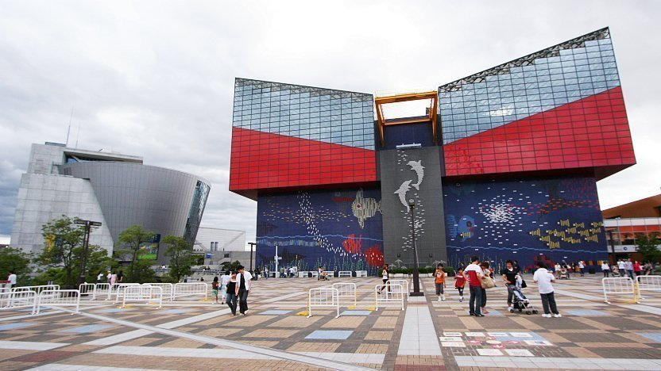
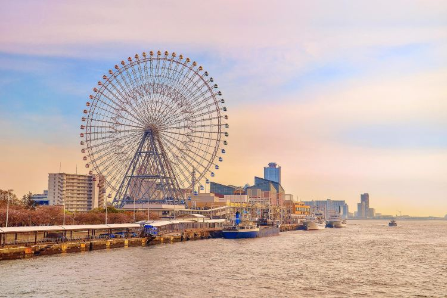
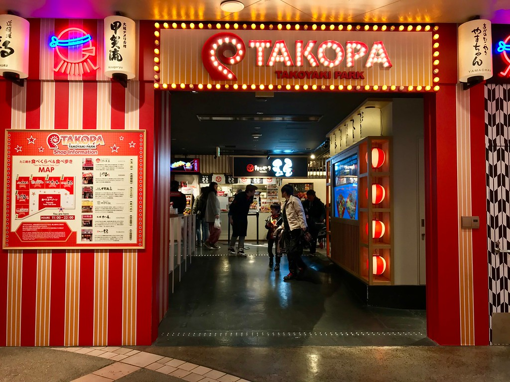
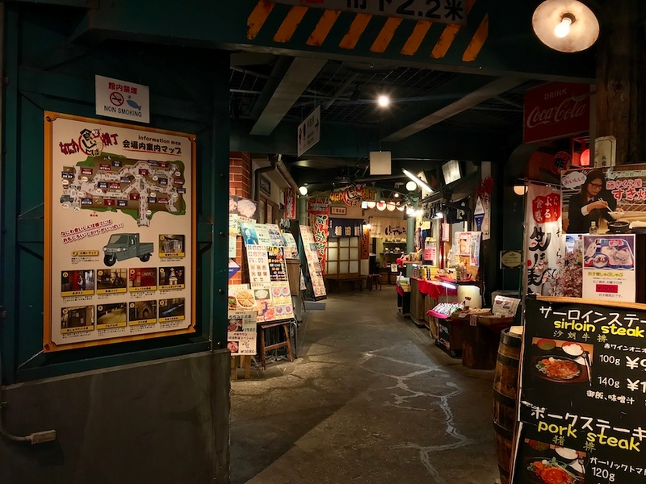

OSAKA BAY
Tourist Spot

Osaka Aquarium
Osaka Aquarium is one of the city’s premier attractions, and one of the best aquariums in the world. It does come with a slightly expensive price tag, but we think it’s worth it. Just be prepared for crowds.
The Osaka Bay area is home to some great attractions, and one of the best reasons to make the trek out is the Osaka Aquarium. Known as Kaiyukan in Japanese, it’s one of the best aquariums in the world. With 15 tanks housing an astonishing variety of ocean life from the Pacific Rim, it is a fantastic day out for adults and children alike.
In the central tank alone, you’ll see large fish like whale sharks, manta rays, tiger sharks, leopard sharks, and a variety of smaller but beautiful fish. Then there are the surrounding smaller tanks where you can see fish and other marine mammals. 2013 saw the opening of a new interactive area where visitors can get up close to some of the animals - it’s probably the only chance you’ll have in your life to really interact with, for instance, a rockhopper penguin!
Osaka Aquarium Kaiyukan Address:
1-1-10 Kaigan-dori, Minato-ku, Osaka-shi, 552-0022
Tempozan Ferris Wheel
Those who like high places and city views should take a ride on the Tempozan Ferris Wheel. Reaching a height of 112 meters, this Ferris wheel offers incredible views of the Bay Area, Osaka, and Kobe. Worth the money if you like this sort of thing!
If you’re in the Osaka Bay area, you are very likely visiting the aquarium or Universal Studios. But if you’re around the aquarium with an extra 15 minutes to spare, consider a ride on the Tempozan Ferris Wheel.
At 112 meters tall, it’s one of the largest Ferris wheels in the world, and offers stunning views of Osaka Bay, Osaka City, and even as far as Kobe.
A ride on the Ferris wheel does cost JPY800 per person, which is rather steep for about 15 minutes. Still, it’s not too bad if you can spare the cash, and if you’re going at night the views are particularly lovely. Fantastic if you’re on a romantic date out.
Tempozan Giant Ferris Wheel Address: 1-1-10 Kaigan-dori, Minato-ku, Osaka-shi, 552-0022Food

TAKOPA Takoyaki Park
Visiting Universal Studios Japan and craving takoyaki? Never fear - TAKOPA (Takoyaki Park) in Universal City Walk. You can sample your way through five of Osaka’s best shops under a single roof. Efficient and tasty!
It’s hard to imagine there was a time before takoyaki around Universal Studios Japan - that is to say, you couldn’t visit the world-famous theme park in Osaka and also sample the city’s most famous street food. Well, that changed in 2006 when Universal City Walk opened TAKOPA (Takoyaki Park).
TAKOPA (Takoyaki Park)（改称）is not an actual “museum” in the traditional sense, but a cluster of five famous and popular takoyaki shops under a single roof. These include Kougaryu, Juhachiban, and Yamachan. Normally, you’d have to travel to all these disparate areas around Osaka to eat at each shop, so having all of them right next to each other is a real time-saver for anyone who wants to eat a variety of great takoyaki without having to sit on trains and buses for a long time.
TAKOPA (Takoyaki Park) Address:
4F Universal Citywalk Osaka, 6-2-61 Shimaya, Konohana-ku, Osaka-shi, 554-0024
Naniwa Kuishinbo Yokocho
Located inside the Tempozan Marketplace, this is a faux Edo-era shopping street lined with small restaurants selling all the usual Osaka specialties like okonomiyaki, takoyaki and kushikatsu. This is the best place to eat in the Tempozan area, but it can get very crowded – try to go during off-peak hours.
If you need dining options while you’re visiting the Osaka Aquarium, Naniwa Kuishinbo Yokocho inside the Tempozan Marketplace is by far the best place to eat. It’s a food hall designed to resemble Osaka shopping streets in the 1960s - a warren of around 20 different stalls and eateries serving Osaka B-grade gourmet food.
B-grade gourmet food tends to be hearty, rib-sticking, and affordable. Think takoyaki (octopus dumplings), okonomiyaki (a cross between a pancake and a frittata), and kushikatsu (battered, deep-fried skewered kebabs). All of it is reasonably delicious and possibly a tad on the unhealthy side. It doesn’t matter, though, since you’re on holiday. Sample as much as you can!
Naniwa Kuishinbo Yokocho Address:
Tempozan Marketplace, 1-1-10 Kaigan-dori, Minato-ku, Osaka-shi, 552-0022